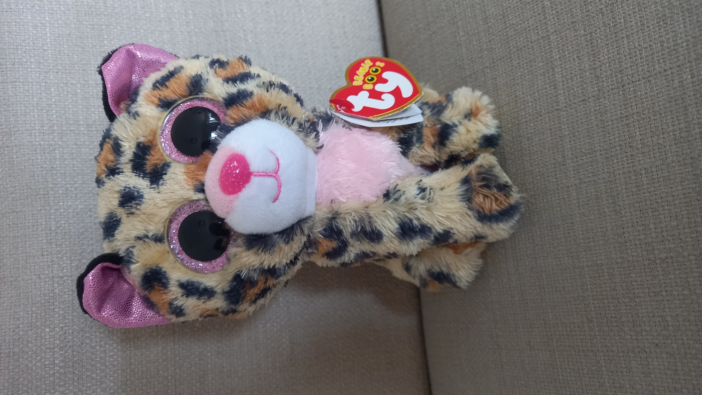

The fastest member of the Cat Club!
Born in August 8 2016, and quickly learnt the ways of the cheetah.
And by that I mean zooming across the planet. (Probably literally)
She has done great things with her kind heart, including easing Juniplush into the school.
2. She was one of the first members of Beanie Boo school!
3. She has a tiny birth mark under her chin.
4. She has two sisters: Glamour and Dotty!
And by that I mean zooming across the planet. (Probably literally)
She has done great things with her kind heart, including easing Juniplush into the school.
Fun Facts:
1. She has tiny sparkles in her ears, which is very rare!
2. She was one of the first members of Beanie Boo school!
3. She has a tiny birth mark under her chin.
4. She has two sisters: Glamour and Dotty!